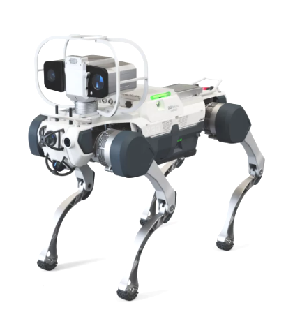
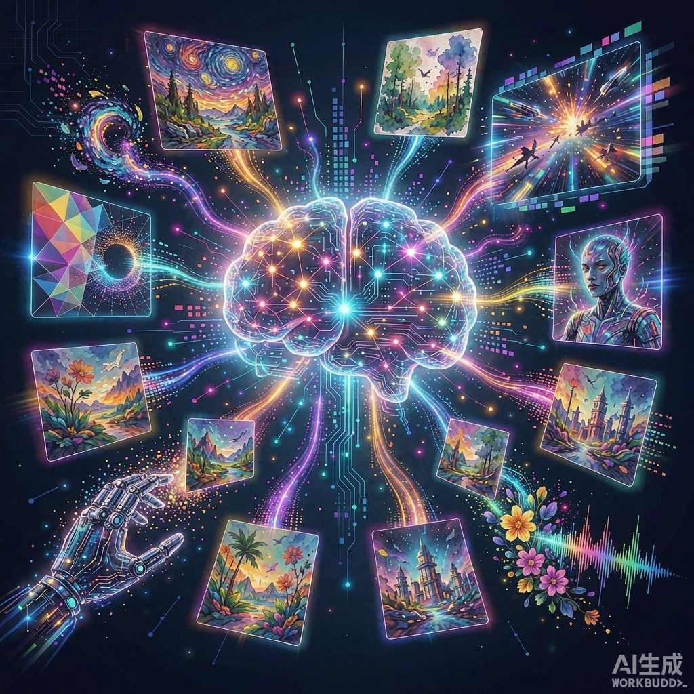

Research on embodied perception, reasoning, and interaction for intelligent agents operating in physical and simulated environments.
Research on image and video understanding, multimodal perception, and trustworthy visual analysis.

Research on generative models for visual content creation, translation, and quality assessment.
Selected publications in CCF-A conferences and top journals (IEEE Transactions, IJCV) over the last three years (2024–2026). See the full list on DBLP.